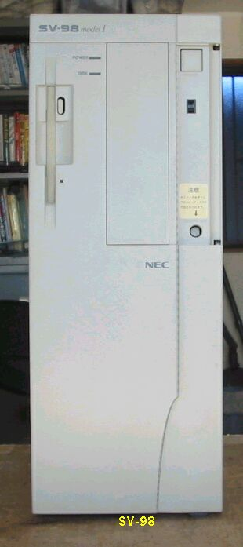
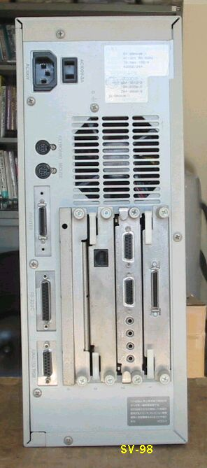

SV-98 mpdel1
SV-98の正面 縦置きです。

SV-98の裏面

SV-98の主な仕様
９８ＳＥＲＶＥＲ SV-98model1
◇◇◇ 主な仕様 ◇◇◇
発表：1994年１２月
┌────────────────┬───────┬────────┬─────────┐
│ │SV-98model1 │SV-98model1N1 │SV-98model1N3 │
├────────────────┼───────┴────────┴─────────┤
│CPU │Pentium(TM)プロセッサ(66MHz) │
├────────────────┼──────────────────────────┤
│キャッシュメモリ │16KB セカンドキャッシュ256KB(ライトバック方式) │
├──────┬─────────┼──────────────────────────┤
│ │ROM │128KB(BIOSおよびN88-BASIC(86)他) │
│ ├─────────┼────────────────┬─────────┤
│メモリ │RAM │ユーザーズメモリ │ユーザーズメモリ │
│ │ │15.6MB標準実装 │19.6MB標準実装 │
│ │ ├────────────────┴─────────┤
│ │ │専用メモリにより、標準実装とあわせて最大79.6MBまで │
│ │ │実装可能 *1 │
│ ├─────────┼──────────────────────────┤
│ │VRAM │テキストVRAM:12KB グラフィックVRAM:1MB │
│ │ │(アクセラレータ兼用) │
├─┬────┴─────────┼──────────────────────────┤
│表│テキスト表示 │英数カナ:80文字×25行／80文字×20行、 │
│示│ │漢字 :40文字×25行/40文字×20行 │
│機│ │・文字単位にアトリビュート(リバース、ブリンク、 │
│能│ │ シークレット、カラー8色) を設定可能 │
│ ├──────────────┼──────────────────────────┤
│ │グラフィック表示 │解像度(表示色):640x400ドット(4096色中16色) │
│ ├──────────────┼──────────────────────────┤
│ │合成表示 │テキスト画面とグラフィック画面との合成表示が可能 │
│ ├──────────────┼──────────────────────────┤
│ │ウィンドウ │内蔵(CIRRUS LOGIC(R)社製GD5428搭載) │
│ │アクセラレータ │解像度(表示色): │
│ │ │ 640x400ドット(26万色中256色、1677万色) │
│ │ │ 640X480ドット(26万色中256色、1677万色) │
│ │ │ 1024x768ドット(26万色中256色) │
├─┴──┬───────────┼──────────────────────────┤
│入力装置│キーボード │JIS標準配列準拠 │
│ │(スカルプチャタイプ) │テンキー、コントロールキー、15ファンクションキー、 │
│ │ │HELP,COPY,BS,INS,DEL,XFER,NFER,CAPSおよびカナの │
│ │ │ロックはソフトウェアで制御可、 │
│ │ │セパレートタイプ(本体とカールケーブルにより接続) │
├────┼───────────┼──────────────────────────┤
│補助記憶│フロッピィディスク │3.5インチフロッピィディスクドライブ1ドライブ内蔵 │
│ │ │(1.44MB/1MB/640KBのフロッピィディスク媒体の読み取り/│
│ │ │読み取り/書き込みが可能) │
│装置 ├───────────┼──────────────────────────┤
│ │固定ディスク │510MB、ライトキャッシュ方式対応 *4 │
├─┬──┴───────────┼──────────────────────────┤
│イ│ディスプレイ │アナログRGB │
│ン├──────────────┼──────────────────────────┤
│タ│プリンタ │パラレルインタフェース、コネクタ:ハーフピッチ36ピン │
│ │ │(本体背面) │
│フ├──────────────┼──────────────────────────┤
│ェ│シリアル │RS-232C規格準拠(最大19,200bps)、 │
│｜├──────────────┼──────────────────────────┤
│ス│マウス │バスマウス接続用、コネクタ:ミニDIN9ピン(本体背面)*2 │
│ ├──────────────┼───────┬──────────────────┤
│ │ネットワーク │オプション │標準内蔵-B4680インタフェース │
│ │ │ │ ：10BASE-5/T │
├─┴──────────────┼───────┼──────────────────┤
│汎用拡張スロット │4スロット │4スロット(但し1スロット占有済み) │
├────────────────┼───────┴──────────────────┤
│ファイルベイ │1スロット(専用インタフェース内蔵、2台目固定ディスク │
│ │ドライブまたはCD-ROMドライブいずれか1台内蔵可能) *3 │
├────────────────┼──────────────────────────┤
│電源 │AC100V±10%、50/60Hz │
├────────────────┼──────────────────────────┤
│温湿度条件 │10〜35℃ 20〜80%(ただし結露しないこと) │
├────────────────┼──────────────────────────┤
│外形寸法 │本体 :155(W)x335(D)x405(H)mm │
│ │キーボード:439(W)x183(D)x 31(H)mm │
├────────────────┼──────────────────────────┤
│重量 │本体:9.5Kg キーボード:1.2Kg │
├────────────────┼──────────────────────────┤
│消費電力 │本体 :75W(最大155W) │
├────────────────┼──────────────────────────┤
(2004/01/08記)
変わった98のページに戻る